上一章我们学习过电路的集总元件在十分高的频率工作时所发生的情况，从而看出一个共振电路可由场在其中共振的一个空腔替代。另一个有趣的技术问题是，要把两个物体连接起来使得电磁能量能在它们之间传输。在低频电路中，这种连接是由导线完成的，但这一种方法在高频时就不怎么奏效，因为这种电路将会把能量辐射到周围的整个空间中去，从而难以控制能量的去向。场将在导线周围散发出去，电流和电压不可能由导线很好地“引导”。在这一章中我们要来看看在高频时物体可能互相连接的办法。至少，这是一种介绍我们课题的方式。
另一种说法是，上面我们讨论了在自由空间里波的行为。现在正是搞清楚当振动场被局限在一维或多维的空间里时所发生的情况的时候。我们将发现一些有趣的新现象。当场受到最好的二维限制而允许在第三维自由通过时，它们将以波的形式传播出去。这些就是“导波”——本章的课题。
我们由研究传输线 的普遍理论着手。那些在旷野从一个铁塔到另一个铁塔的输电线会辐射出一些功率，但电源的频率（50～60Hz）竟是如此之低，以致这种损失并不严重。这种辐射可以用金属套管包围导线而加以防止，但这一办法对于电力传输线来说并不实际，因为所用的电压和电流势必要求一条十分粗重而又昂贵的套管。因此，常用的还是简易的“明线”。
对于较高一些的频率——比方说几千赫——辐射可能已变得严重。然而，它还是可采用诸如在短程电话接线中所用的那种“双扭线”来降低的。但是，在更高频率时，辐射立刻变得难以忍受，这或是由于功率损失，或是由于能量在不需要它出现的其他电路中出现了。对于从几千赫起至几百兆赫的频率，电磁信号和功率往往采用在筒形“外导体”或“屏蔽物”之内含有一根导线的那种同轴线来传输。虽然我们仍将仅仅对一根同轴线进行推导，但下述处理办法将适用于两个互相平行的任何形状的导体构成的传输线。
试取一条最简单的同轴线，在其中心处有一个薄中空圆筒，此外又有与这一内导体同轴的另外一个导体，也是一个薄筒，如图24-1所示。一开始我们用近似的方法算出该同轴线在相对低频时的工作情况。当早先我们讲到两导体具有确定的单位长度电感或电容时，就已经描述了某些低频行为。事实上，是可以通过给出任何一根传输线的单位长度电感L0 和电容C0 而描述其低频行为的。于是，我们就可以将该线当作§22-6中曾讨论过的那种LC滤波器的极限情况而加以分析。通过采用一些小串联元件L0 Δx和一些小并联元件C0 Δx（其中Δx是该线中的一个长度元），可以制造一个模拟传输线的滤波器。利用关于无限长滤波器的结果，可以看到电场的信号会沿着该线传播。然而，我们现在并不想遵循这一途径，而宁愿从微分方程的观点来考察该线。
图24-1 一条同轴传输线
假设我们要看看沿传输线相邻两点，比如说距离线的开头部分为x和x+Δx两点间发生的事情。让我们把这两导体间的电势差称为V（x），而沿那根“热”导体的电流称为I（x）（见图24-2）。如果导线中的电流正在变化，则电感将向我们提供跨越从x至x+Δx那一小段导线间的电压降计为：
或者，取Δx→0的极限，则可得
这表明变化着的电流产生了电压的梯度。
图24-2 传输线的电流和电压
再参考上图，若在x处的电压正在变化，则必定有某些电荷提供给该区域里的电容。如果我们考虑从x至x+Δx那一小线段，则其上的电荷为q=C0 ΔxV。这一电荷的时间变化率为C0 ΔxdV/dt，但只有在流入该线元的电流I（x）不等于从该线元流出的电流I（x+Δx）时电荷才出现改变。把这一电流差称为ΔI，便有
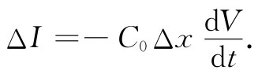
若取Δx→0的极限，可得
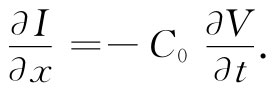 （24.2）
因此，电荷守恒意味着电流梯度正比于电压的时间变化率。
于是，式（24.1）和（24.2）就是传输线的基本方程。如果我们乐意，可以把它稍微修改一下使之包括导体中的电阻效应或电荷经由导体之间绝缘体的渗漏现象，但对于眼前的讨论来说我们将只停留在这个简单例子上。
关于传输线的这两个方程，通过对其中一个取t的微商，而对另一个取x的微商，再消去V或I，从而把它们结合起来。于是，我们就有
由此我们再次认识到它们是在x方向上的波动方程。对一条均匀的传输线来说，电压（或电流）作为波而沿该线传播。沿线电压必然会取V（x，t）=f（x-vt）或V（x，t）=g（x+vt）或两者之和的形式。那么速度v是什么呢？我们知道，∂2 /∂t2 项的系数恰好是1/v2 ，因而
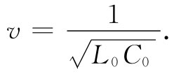 （24.5）
我们将希望你们去证明：线里每一个波 的电压总会正比于那个波的电流，而比例常数刚好等于特性阻抗z0 。对于沿正x向行进的波分别称其电压和电流为V+ 和I+ ，则应该得到
V+ =z0 I+ . （24.6）
同理，对于一个负x走向的波其关系为
V- =-z0 I- .
特性阻抗——正如过去曾从滤波器方程中找到的那样——由下式给出：
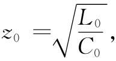 （24.7）
所以是一个纯电阻。
为求得一条传输线的传播速率v及其特性阻抗z0 ，我们必须知道单位长度的电感和电容。对于一条同轴电缆来说，是能轻而易举地把它们算出来的，因而我们会知道情况到底怎么样。对于电感，根据§17-8的那些概念，并设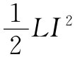 等于磁能，则它可以通过∈0 c2 B2 /2对整个体积的积分而获得。假定该中心导体载有电流I，那么我们知道，B=I/（2π∈0 c2 r），其中r为离轴的距离。取一厚度为dr而长度为l的柱形壳作为体积元，则对于磁能应有
式中a和b分别代表内外两导体的半径。算出该积分，得
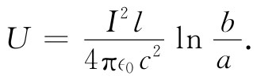 （24.8）
设这一能量等于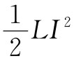 ，就可以求出
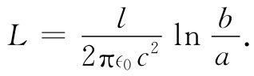 （24.9）
正如推测到的那样，它与线的长度l成正比，因而单位长度的自感L0 就是
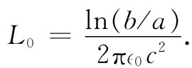 （24.10）
我们曾算出在一柱形电容器上的电荷（见§12-2）。现在，将该电荷除以电势差，便得
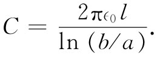
因而单位长度的电容C0 为C/l。把这个结果与式（24.10）相结合，便可知道乘积L0 C0 恰好等于1/c2 ，因而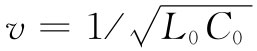 即等于c。波以光速沿线向下传播。必须指出，这一结果有赖于我们所做的如下假定：（a）在两导体之间的空间里并没有电介质或磁性材料存在，以及（b）电流全都是在导体表面上通过的（对理想导体理该如此）。我们以后还将见到，对于优良导体，当频率高时，一切电流将像理想导体那样都分布于其表面上，因此这个假定是适用的。
眼下有趣的是，只要（a）和（b）两假设正确，则对于任一 对平行导体——甚至是一根六角形内导体放置在一根椭圆形外导体中的任何地方——积L0 C0 就等于1/c2 。只要横截面固定不变以及两导体之间的空间里没有材料，则波以光速传播。
关于特性阻抗就不能做出这样的普遍表述。对于一根同轴线来说，它是
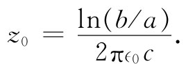 （24.11）
式中因子1/（∈0 c）具有电阻的量纲并等于120πΩ。几何因子ln（b/a）仅以对数的形式依赖于同轴线的几何尺寸，因而就同轴线——和大多数传输导线——而言，这特性阻抗具有从50Ω至几百欧左右的典型值。